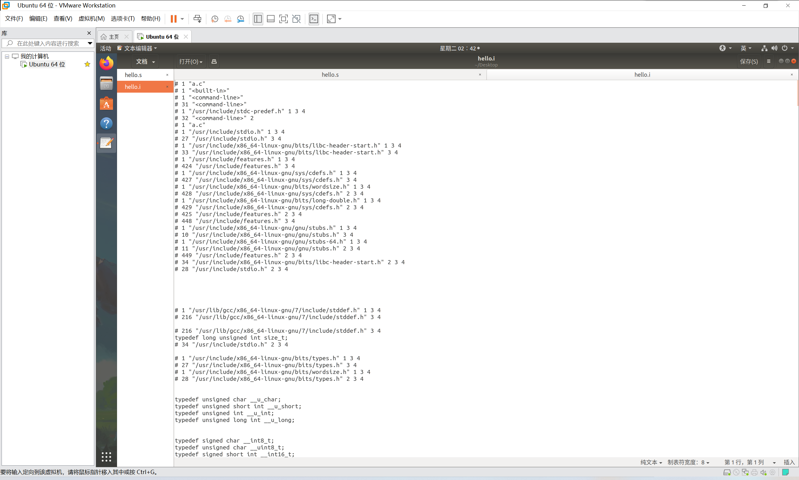
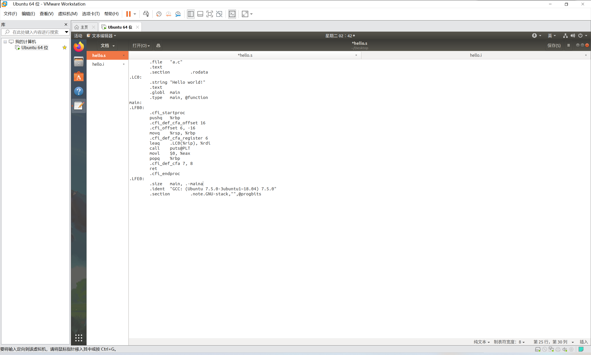
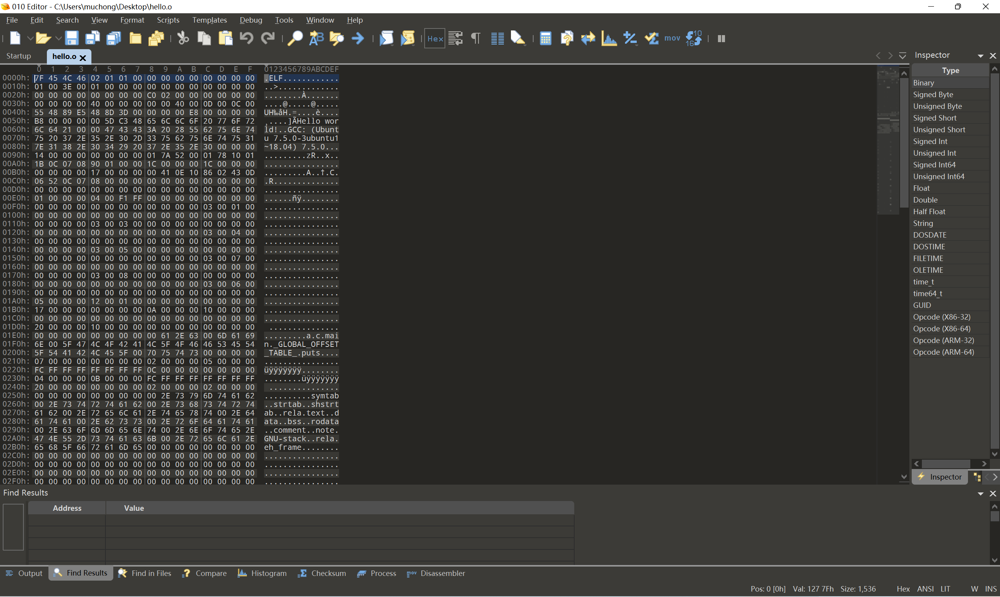
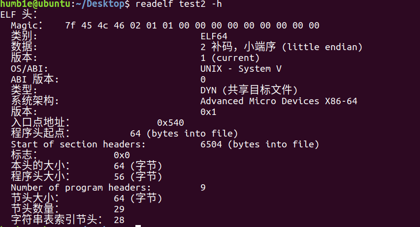
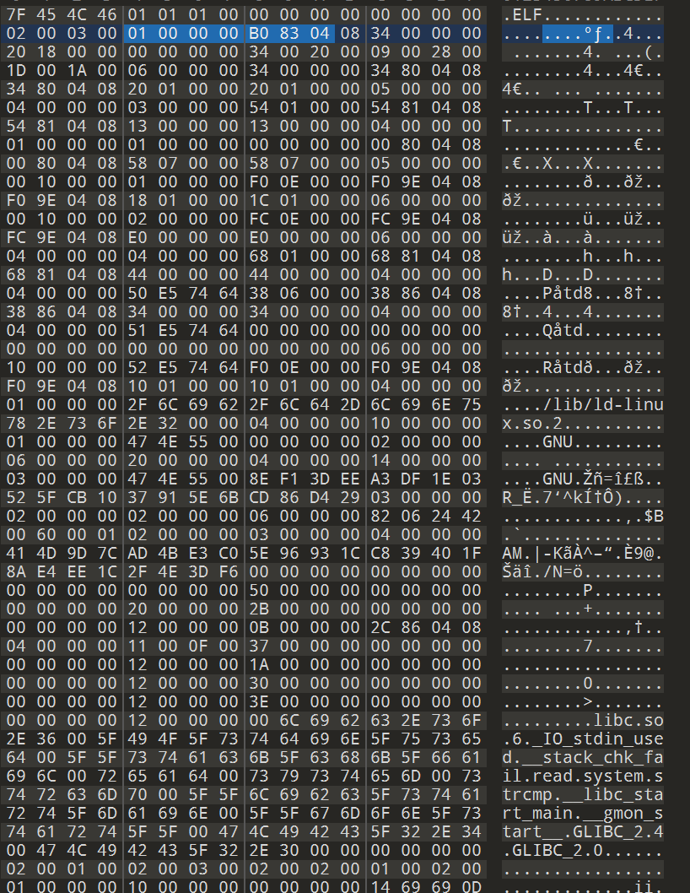
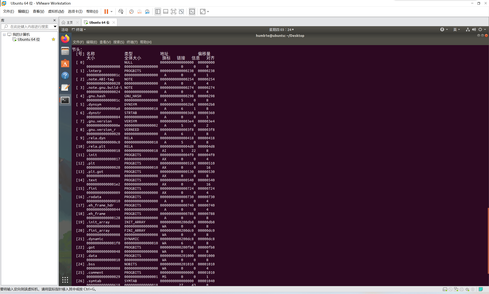

这是一本关于链接、装载和库的书，大概揭示了各种程序运行的背后发生了什么
和汇编语言类似属于比较底层的知识点
接口
在计算机上，各个层级之间是无法直接交互的，所以各个层之间的通信必须要借助特定的协议
各个层级之间的通信协议就叫做接口
API（application programming interface） 应用程序编程接口
这样一个接口可以让计算机上的应用程序可以在操作系统上跑起来，相当于应用程序与操作系统的接口
运行库使用操作系统提供的系统调用接口，常以软件中断的形式提供（如Linux中的0x80）
继续向下，操作系统对于硬件来说也是上层的，所以需要一个接口，这个接口一般叫做硬件规格
硬盘的结构
硬盘的基本存储单位为扇区（sector），每一个扇区一般为512字节
虚拟地址的产生
在早期的计算机中，所有的程序都是直接跑在物理内存上的
但是这样的运行方式有一些问题：
1.内存地址不隔离：所有的程序都是直接访问物理内存，那么可以轻易的修改其他程序的内容，安全系数低；并且有bug的程序会造成很大的破坏
2.内存的使用效率很低：早期的计算机的物理内存是非常小的，所以很多程序同时占用内存的话会出现无法运行的情况
3.内存地址的不确定性：有过之前汇编指令的知识可以知道，在汇编语言中有一些直接跳转语句，是根据我们输入的固定的地址跳转的，如果每次运行时的地址不同那么必然会对程序的编写造成麻烦（这里也涉及到重定向的问题）
有了问题，于是虚拟地址就出现了
我们把程序给出的地址看作虚拟地址，通过某种映射的方法把这些地址映射到物理地址上，只要我们完善了这一个映射过程，那么就可以保障任意一个程序所能够访问的物理地址和另一个程序互不重叠，也就达到了地址空间隔离的效果
分段（segmentation）
把程序所需要的内存空间大小的虚拟地址映射到某个物理地址
映射函数由软件提供
实际的操作由硬件负责
这个操作解决了地之间的隔离，解决了上述1.3问题，但是第二个问题仍无法解决，因为实际的内存大小没有发生改变，如果有两个占用很大内存的程序进出仍然需要对很大部分的内存进行修改，速度依然很慢，于是就产生了分页的技术
分页（paging）
分页的基本方法是把地址空间人为地等分成固定大小地页，其中每一页地大小由硬件决定，或者硬件支持各种大小的页，由操作系统自己选大小
把一个进程的虚拟地址分割为页，把常用的数据和代码也装载到内存中，把不常用的代码和数据保存到磁盘中
在磁盘中的页暂时处于未使用的状态，我们把物理内存中的页叫做物理页（PP）虚拟空间中的页叫做（VP）磁盘中的叫做（DP）
有的虚拟页中的有相同的，那么便可以映射到同一物理页，这样就实现了内存共享
假如说需要访问磁盘页，硬件会捕捉到页错误的消息，然后由操作系统接管进程，从磁盘中读出内存页并且装载到内存中
以页为单位进行数据的交换和存取很方便，毕竟硬件就是按照这种模式设计的
同时页也可以起到保护的作用，每一个页都可以设置权限属性，谁可以修改，谁可以访问都可以设置，并且只有操作系统有权限修改这些属性，那么操作系统就可以保护自己了。
虚拟存储需要硬件的支持，毕竟前面说了，映射函数是软件负责的，实际操作靠硬件，一般都是靠一个MMU（memory management unit）的部件来实现页映射
MMU可以把虚拟地址转换成物理地址，一般MMU都会集成在CPU内部
线程
线程（thread）
有时也被称为轻量级进程
是程序执行流的最小单元
一个标准的线程由线程ID、当前指令指针（PC）、寄存器集合和堆栈组成。通常意义上，一个进程由一个或多个线程组成，各个线程之间共享程序的内存空间及一些进程级的资源。
多线程的好处
1.假如说一个操作需要耗费大量的时间，并且他占用了一整个CPU，那么电脑就死机了，无法响应其他操作，多线程可以让他也处理一下其他的操作
2.可以满足一些本身就需要并发操作的程序，比如多端下载
3.与多核计算机的潮流吻合
4.方便数据共享
对于只有一个cpu的计算机来讲，多线程操作其实是虚假的
操作系统让这些线程轮流执行，每个执行一小段时间，这样看起来所有的线程都在同时进行了。
各个线程之间也存在优先级和轮转法
轮转法就是轮流运行一小段时间
优先级高的线程会先运行，Windows可以通过BOOL WINAPTI SETTHREADPRIORITY来设置
Linux可以通过pthread库设置
但是避免有的线程优先级过低导致无法运行，所以有的线程长时间未运行就会被操作系统提升优先级
线程安全
多个线程同时访问共享数据可能会造成比较严重得后果
假如两个线程同时运行
i++;
i–;
并且访问得数据是一样的话，那么最后可能会导致结果出错，因为自增（++）操作的汇编指令不止一条，所以可能运行一半就被打断。
我们把单指令的操作称为原子的（atomic），这样一定程度上就可以避免出错，很多体系也提供了一系列的原子指令。
但是在一些比较复杂的情况下，原子指令是不够用的。
所以就出现了同步与锁的概念
同步的常见方法就是锁，可以锁定数据不被其他线程读取
有二元信号量，互斥量，临界区，读写锁各种方式的锁，实现的目标都类似
可重入：表示一个函数没有被执行完，由于各种原因需要再次进入该函数，就叫做重入
重入是需要条件的。
（第一章结束了 希望做到一天一章吧 这个写了一章就废了两千字左右，比汇编更加底层了 并且知识点也更加细碎了）
编译与链接
ps:呃，第二章有一百多页，今天先看个一半编译吧：）
被隐藏的过程
集成开发环境IDE，它其实一步就完成了编译和链接的过程，这样的过程被称为构建
其实.c文件到可执行文件需要四个过程
预处理—>编译—>汇编—>链接
预处理
$gcc -E hello.c -o hello .i
-E表示只进行预编译
预编译主要处理.c文件中的以“#”开头的预编译指令
比如#include
主要规则如下：
1.将所有的#define删除，并且展开所有的宏定义
2.处理所有条件预编译指令例如#if #ifdef
3.处理#include指令，把他所包含的文件插入到该预编译指令的位置，这个进程是递归的，也就是说所包含的文件可以继续包含文件
4.删除所有的注释//和/**/
5.添加行号和文件名标识
6.保留所有的#pragma编译器指令

不怎么好看哈哈
编译
编译做一系列的词法分析，语法分析，语义分析以及优化后生产相应的汇编代码文件
$gcc -S hello.i -o hello.s
现在版本的gcc把预编译和编译合并为一个步骤，使用一个叫做cc1的程序来完成这个步骤。
所以说直接$cc1 hello.c也是可行的

可以看到这已经是大概的汇编程序了
汇编
汇编器是把汇编代码转变为机器码
基本上就是一一翻译
$gcc -c hello.c -o hello.o
这里可以发现，这是一步到位的.c直接到了.o（Object File）
如果想要.s变.o则需要as汇编器
$as hello.s -o hello.o
汇编之后的文件就是二进制文件了
Linux直接告知无法打开二进制文件
我尝试./运行
但是被告知权限不够
于是我$chmod 777 hello.o
之后还是无法运行
只能贴一张它二进制下的图了

链接
我们可能会很异或，为什么输出了机器码的文件，但是却不能运行，需要一个链接的过程
呃，链接如果不管地址，命令大概是这样的
$ld -static crt1.o crti.o crtbeingT.o hello.o -start -group -lgcc -lgcc_eh -lc-end-group crtend.o crtn.o
可以看到，要链接一大堆文件才行
在解读这些乱七八糟的东西之前，我们先看一看编译器做了些什么
编译器做了些什么
简单来讲，编译器把高级语言变成了机器语言
编译有6步：
扫描–>语法分析–>语义分析–>源代码优化–>代码生成–>目标代码优化
扫描+语法分析
这两个操作几乎是同步的把源代码扫进去，把源码中不同的字符分割成各种记号，大概有：关键词，标识符，字面量（数字，字符串等），特殊符号（加号，等号）
语法分析
语法分析采用上下文无关语法，由语法分析器执行产生语法树
语法树就是以表达式为节点的树

这样的一个过程，我们可以确定各种运算的优先级，比如*的节点在+之上。
并且可以区分同一符号的不同含义，比如说*可以代表乘法和取内容。
如果出现了表达式不合法，或者括号不匹配，表达式缺少操作符类的错误，就会报语法分析错误阶段的错误
语义分析
我们知道我们写的代码中有些错误编译器是无法发现的
比如说我们让两个指针相乘，在静态上并没有错误，但这是无意义的
编译器所能分析的语义是静态语义，这是指在编译器可以确定地语义，与之对应的有动态语义，也就是只有在运行期才能确定的语义
静态语义有声明和类型的匹配，类型的转换

中间语言生成
中间语言生成实际上就是优化，现代编译器会进行一系列的优化，往往在源码级别会有一个优化
比如说2+6这样一个操作就可以被优化，但是编译器并不是人脑，不知道这个可以被优化为8
这就是中间代码的作用，比较常见的是采取三地址码的形式和P-代码的形式
最基本的三地址码是
x= y op z
op是一个操作，可以是算数也可以是任意用到yz的操作，三地址码也得名于此
上面的2+6翻译之后是这样的
t1=2+6
t2=index+4
t3=t2*t1
array[index]=t3
为了使所有的操作都符合三地址码
我们多用了几个临时变量t1,t2,t3
这样的优化之后程序就会把2+6的结果算出来得到t1=8，然后直接把t1替换为8
这样还省去了一个t3
目标代码生成与优化
源码级优化器产生中间代码之后的过程都属于编译器的后端
主要包括代码生成器和目标代码优化器
代码生成器就是把中间代码转换成目标机器代码
这个过程很依靠目标机器，毕竟不同机器有不同的字长，寄存器，数据类型，浮点操作
生成代码序列（这里讲x86的汇编）
代码优化就是对上述汇编语言进行优化，比如选择合理的寻址方式，使用位移来代替乘法运算，删除多余的指令等。
但是这样的操作之后我们的变量仍然没有确定地址
确定地址是链接干的事
重定位
以前的程序员都是手打孔（手搓二进制）的悲催生物，所以涉及到地址的跳转都是很复杂的事情，假如说程序的地址改变了，那么孔就要重新打，这种重新计算各个目标地址的操作就是重定位
当然不能忍受这样的酷刑了，于是人们发明了汇编
汇编中跳转只需要jmp就行了
jmp foo（假设）
那么我们不需要输入foo的地址，这事编译器会去做的
符号这个概念也迅速普及了，它用来代表一个地址
链接
有了汇编之后，代码的生产力就被大大提高了，于是又越来越多的代码被生产出来，人们想能不能把一些不同功能的代码打包起来，作为一个模块，方便复用，比如说把函数和变量打包在一个.c文件中
现代软件开发更加了，动辄百万行代码，于是这样的包越来越重要了，各个模块之间互相依赖又独立。
在一个程序被分割成多个模块之后，模块之间如何组合形成一个单一的程序是一个问题，模块之间如何组合的问题其实就是模块之间如何通信的问题，最常见的属于c的模块通信又两种方法，一种是模块间的函数调用，另一种是模块间的变量访问。这二者都需要知道被访问对象的地址，也就是模块间符号的引用。
这样模块之间的拼接过程也就是链接
模块装载——静态链接
链接的过程已经讲了，需要找地址的
于是就有：
地址和空间分配–>符号决议–>重定位
（符号决议有时也被叫做符号绑定，决议倾向于静态链接，绑定倾向于动态链接）
最基本的静态链接就是每个模块的源代码文件.c经过编译器编译成为目标文件.o，目标文件.o和库一起链接形成最终可执行文件
而最常见的库就是运行时库
其实链接很大一部分工作就是找地址，你要用那一块模块中的功能，但是地址有时不确定的，并且有可能发生改变，那么就需要修改地址，入手肯定不能处理这样庞大的工作量，链接就会帮我们做这样的重定向工作。
目标文件（.o）里有什么
确实，从广义上看目标文件和可执行文件是一致的，都是机器码
除了可执行文件（Windows下的.exe Linux下的.elf）按照可执行文件格式存储
动态链接库（Windows下的.dll Linux下的.so） 静态链接库（Windows下的.lib Linux下的.a）也都按可执行文件格式存储
Windows下这类文件都按PE-COFF(common file format)存储
Linux下按ELF格式存储
但是Linux下的静态链接库有所不同，他把很多文件捆绑起来形成一个文件，再加上一些索引
ELF文件标准中ELF格式的文件被分为了四类：
可重定位文件（relocatable file）：包含代码和数据，可以被用来链接成可执行文件或者.so，静态链接库被归为这一类（实例：Linux的.o Windows的.obj）
可执行文件（executable file）：就是直接可执行，Linux下没有也不需要扩展名 （实例/bin/bash文件 windows下的exe）
共享目标文件（shared object file）：包含代码和数据。有两种使用：与其他.o和.so链接成为新的目标文件；动态链接器把几个.so文件与可执行文件结合作为进程映像的一部分来执行（实例：Linux的.so Windows下的.dll）
目标文件是怎么样的
目标文件中肯定包含了：代码，数据 之后也被添加了符号表，调试信息，字符串
目标文件把他们按类别存储为节也叫段
目标文件大概长这样：
File header -->文件头
.text section -->代码段(sometimes .code)
.data section -->数据段
.bss section -->
文件头
描述整个文件的文件属性，包括是否可执行，是静态链接函数动态链接及入口地址（可执行文件），目标硬件，目标操作系统等信息
文件头还包含一个段表，段表描述了文件中各个段在文件中的偏移位置及段的属性
从段表中可以得到每个段的所有信息，文件头后面就是各个段的内容
一半C语言编译后执行语句保存在.text
已初始化的全局变量和局部静态变量保存在.data
未初始化的全局变量和局部静态变量保存在.bss
未初始化的全局变量和局部静态变量默认为0
所以在.data没有必要保存他们，只需要在.bss段预留空间就行，所以.bss段没有内容也不占空间
分段的意义
把代码和数据分离之后，在程序被装载时可以把他们映射到不同的虚拟地址，之后可以把数据段设置为可读可写，代码段设置为可读，提高程序的安全性
CPU缓存被设计为数据缓存和指令缓存分离，所以这样有助于提高CPU的效率
另一个重要原因就是假如说一个程序被运行了很多副本，他们的指令都是一样的，所以缓存中只要保存一份该程序的指令部分
这一点对于其他的可读数据也是一样的，图片，文本等资源都是可以共享的，这样可以节省大量的内存
遇到了大麻烦：(
挖掘一个.o文件
用objdump可以发现除了代码段，数据段和bss段外还有
.rodata(只读数据段)
.comment（注释信息段）
.note.GUN-stack（堆栈提示段）
段的属性
比较重要的是长度size和位置file offset
每个段中的第二行的CONTENTS ALLOC等表示段的各种属性
bss段没有contents因为他没有内容
堆栈提示段有contents但是长度为0 我们暂且认为他不存在
代码段
呃 好像没啥好说的
机器码 反编译一下就是汇编代码
数据段和只读数据段
.data段保存的是初始化了的全局静态变量和局部静态变量
比如说printf(“%d\n”)这里有一个只读字符串常量"%d\n"这个字符串常量就会被放到.rodata段
程序中的只读常量都会被放到.rodata段，比如说用const修饰的常量和字符串常量
单设一个只读段方便了内存的映射，可以直接把.rodata段属性改为只读，保障了程序的安全性
另外，有些嵌入式平台的有些存储区是采用只读存储器的，这样就直接把.rodata段写进去就行了
BSS段
static int x1=0;
static int x2=1;
相同的类型但是x1会被放在.bss段，x2被放在.data段
因为x1的值是0，相当于未初始化，这样直接放在.bss段可以节省磁盘空间，这是一个优化的操作
其他段
.rodata1 (read only data,相当于.rodata)
.comment(编译器版本信息)
.debug(调试信息)
.dynamic(动态连接信息)
.hash(符号哈希表)
.line(调试时的行号表，即源代码和编译后指令的对应表)
.note(额外的编译器信息，比如程序的公司发行名，发布版本等)
.strtab(string table 字符串表，存储elf文件中用到的各种字符串)
.symtab(symbol table 符号表)
.shastrtab(section table段名表)
.plt ,.got
.init,.fini
后面两行之后细讲
以.作为前缀说明这些表的名字是系统保留的
我们可以在里面插入一些自己定义的段比如music但是不能加.作为前缀
（插入可以用一个工具叫做objcopy）
ELF文件结构描述
文件头
文件头中定义了ELF魔数，文件机器字节长度，数据存储方式，版本，运行平台，ABI版本，ELF重定位结构，硬件平台，硬件平台版本，入口地址，程序入口和长度，段表的位置以及段的数量
可以通过readelf来输出elf文件的头文件信息


ELF魔数（magic）
16个字节对应着elf文件的平台属性比如字长，字节序，文件版本
前四个字节是所有elf文件都相同的标识码第一个字节对应ascii字符里的DEL控制符，后面三个就是ELF的ASCII码
操作系统在加载文件时会检查魔数，如果魔数不正确就会拒绝加载
接下来第一个字节是用来标志ELF文件类的0x01表示32位0x02是64位
第6个是字节序表示大小端序
第7个事ELF文件的主版本号
后面9个没有定义
段表

有点多
实际上段对于操作系统没有意义，操作系统只能认出他们的属性与权限
段的名字对于编译器和链接器有意义
重定位表
.rel.text是重定位表
字符串表
ELF文件中用到了很多字符串，比如说段名和变量名，他们的长度都是不定的，所以常见的方法是把他们打包起来放到字符串表中，然后用字符串在表中的便宜来引用字符串
链接的接口——符号
之前我们就说过，链接的实质就是指明地址
地址可以是函数的地址，变量的地址，他们的名字都必须是不一样的
变量和函数被称为符号
他们的名字就是符号名
符号是链接中的粘合剂，整个链接过程正是基于符号才能够正确的完成。
符号通过符号表来管理，这个表里记录了目标文件中所用到的所有符号
每个符号再符号表里对应一个值，这个值叫做符号值其实就是函数和变量的地址
ELF符号表结构
ELF文件中的符号表往往是文件中的一个段
段名一般是.symtab
符号表的结构就是一个32位ELF下的数组
数组的第一个元素为无效的未定义
符号修饰与函数签名
前置知识我们可以知道
符号名是不可以重复的，这样就会出现一个问题
假如我们定义了一个库函数里面有main函数，这样链接的话我们的C语言程序里就不能有main函数
这样显然是不合理的
所以所有C语言库函数在编译后都会在变量和函数前加上‘_’，同样的Fortran语言会在前后都加上‘_’
但是这样也无法解决问题，因为库的数量一多仍然会导致重复
所以人们就发明了命名空间
（随着时间的推移，很多操作系统和编译器都被重写了汇编库的冲突问题已经不那么明显了，所以Linux下GCC编译器已经默认取消了下划线，但是Windows下的编译器还是保留了下划线
调试信息
GCC编译时加上-g就可以在目标文件里找到调试信息了
如果您喜欢此博客或发现它对您有用，则欢迎对此发表评论。 也欢迎您共享此博客，以便更多人可以参与。 如果博客中使用的图像侵犯了您的版权，请与作者联系以将其删除。 谢谢 ！